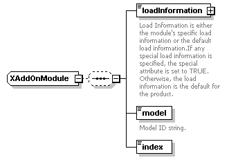
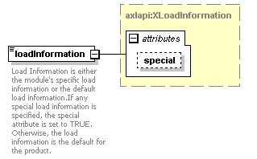
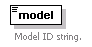

| diagram |  | ||
| namespace | http://www.cisco.com/AXL/API/10.5 | ||
| children | loadInformation model index | ||
| used by |
|
||
| source | <xsd:complexType name="XAddOnModule"> <xsd:sequence minOccurs="0"> <xsd:element name="loadInformation" type="axlapi:XLoadInformation" nillable="true" minOccurs="1" maxOccurs="1"> <xsd:annotation> <xsd:documentation>Load Information is either the module's specific load information or the default load information.If any special load information is specified, the special attribute is set to TRUE. Otherwise, the load information is the default for the product.</xsd:documentation> </xsd:annotation> </xsd:element> <xsd:element name="model" type="axlapi:XModel" default="7914 14-Button Line Expansion Module" minOccurs="1" maxOccurs="1"> <xsd:annotation> <xsd:documentation>Model ID string.</xsd:documentation> </xsd:annotation> </xsd:element> <xsd:element name="index" type="axlapi:XInteger" minOccurs="1" maxOccurs="1"/> </xsd:sequence> </xsd:complexType> |
| diagram |  | ||||||||||||
| type | axlapi:XLoadInformation | ||||||||||||
| properties |
|
||||||||||||
| attributes |
|
||||||||||||
| annotation |
|
||||||||||||
| source | <xsd:element name="loadInformation" type="axlapi:XLoadInformation" nillable="true" minOccurs="1" maxOccurs="1"> <xsd:annotation> <xsd:documentation>Load Information is either the module's specific load information or the default load information.If any special load information is specified, the special attribute is set to TRUE. Otherwise, the load information is the default for the product.</xsd:documentation> </xsd:annotation> </xsd:element> |
| diagram |  | ||||
| type | axlapi:XModel | ||||
| properties |
|
||||
| annotation |
|
||||
| source | <xsd:element name="model" type="axlapi:XModel" default="7914 14-Button Line Expansion Module" minOccurs="1" maxOccurs="1"> <xsd:annotation> <xsd:documentation>Model ID string.</xsd:documentation> </xsd:annotation> </xsd:element> |
| diagram | |||
| type | axlapi:XInteger | ||
| properties |
|
||
| source | <xsd:element name="index" type="axlapi:XInteger" minOccurs="1" maxOccurs="1"/> |